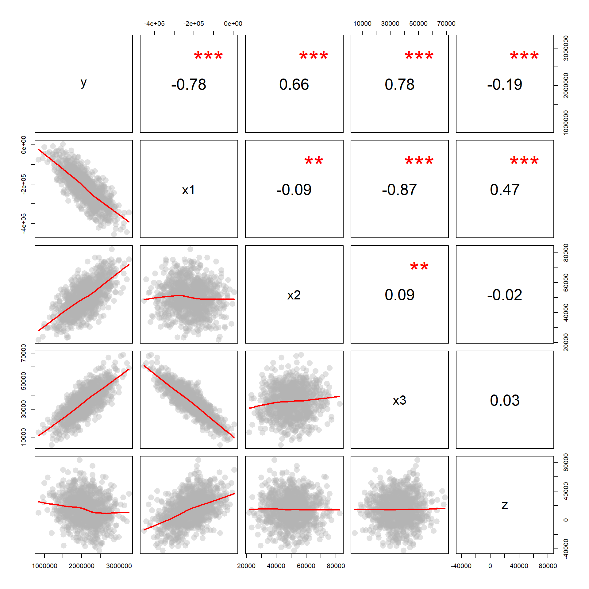
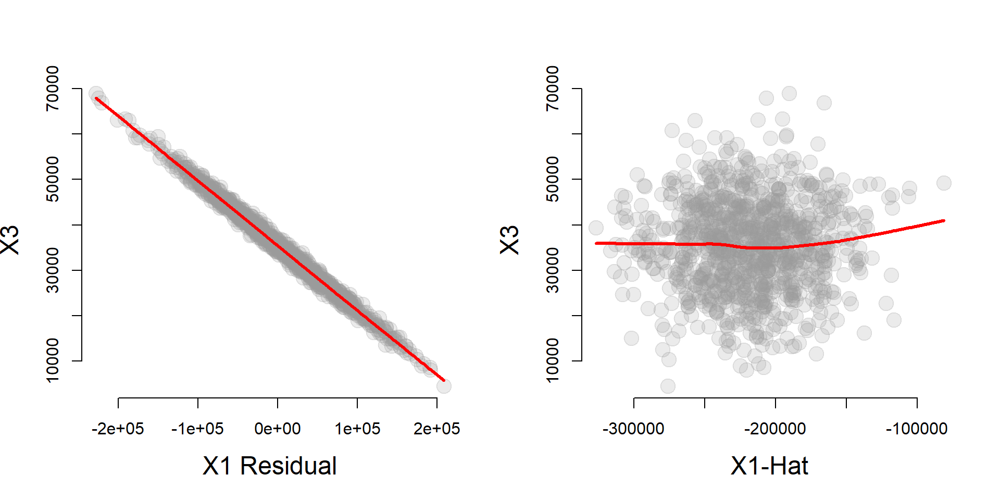
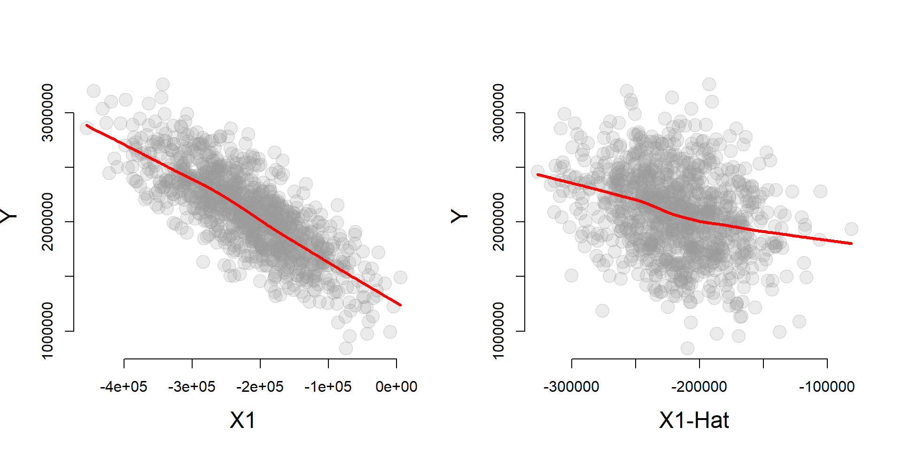
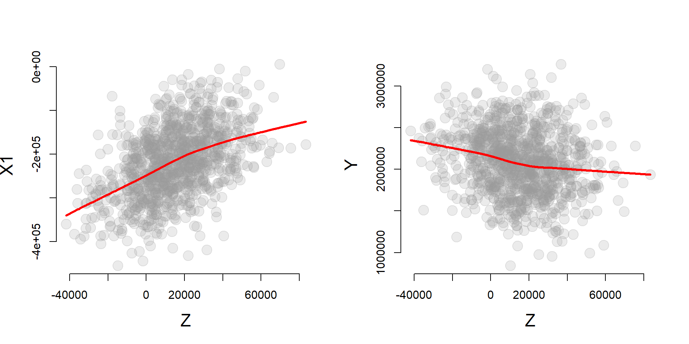

Instrumental Variables Example
## Load stargazer package for nice tables
library( stargazer )
library( dplyr )
library( pander )
Data
- X1 is the policy variable
- X2 is a control variable
- X3 is the omitted variable
- Z is the instrumental variable
- Y is the outcome
URL <- "https://ds4ps.org/cpp-525-spr-2020/lectures/data/iv-reg-example.csv"
dat <- read.csv( URL, stringsAsFactors=F )

Does the variable Z meet the criteria as an instrument if X1 is the policy variable and X3 is the omitted variable? How do you know?
Answer:
- Z is highly correlated with X1
- Z is uncorrelated with X3
- Z is only correlated with Y through X1 (this you argue by theory)
Size of Bias
# Full Model - Correct Slopes
full.model <- lm( y ~ x1 + x2 + x3 )
# Naive Model (biased slopes)
naive.model <- lm( y ~ x1 + x2 )
stargazer( full.model, naive.model,
column.labels = c("Full Model","Naive Model"),
omit.stat = c("rsq","ser"),
type="html", digits=2 )| Dependent variable: | ||
| y | ||
| Full Model | Naive Model | |
| (1) | (2) | |
| x1 | -2.00*** | -3.54*** |
| (0.0001) | (0.03) | |
| x2 | 23.00*** | 23.17*** |
| (0.0003) | (0.22) | |
| x3 | 14.00*** | |
| (0.001) | ||
| Constant | -21.05 | 150,496.50*** |
| (19.11) | (12,387.91) | |
| Observations | 1,000 | 1,000 |
| Adjusted R2 | 1.00 | 0.97 |
| F Statistic | 4,978,805,025.00*** (df = 3; 996) | 14,977.62*** (df = 2; 997) |
| Note: | p<0.1; p<0.05; p<0.01 | |
Our estimate of policy impact is very different in our “naive model” versus the full, unbiased model. The omitted variable X3 is causing problems.
Instrumental Variable Model
When we have an instrumental variable, we estimate our policy impact using a “Two-Stage Least Squares” approach. In the first stage, we “clean” our policy variable from the influence of the omitted variable X3. In the second stage, we use the clearn version of X1 (X1-hat) to make a better (less biased) estimate of program impact.
first.stage <- lm( x1 ~ z + x2 )
x1_hat <- fitted( first.stage )
second.stage <- lm( y ~ x1_hat + x2 )
stargazer( full.model, naive.model, second.stage,
column.labels = c("Full Model","Naive Model","IV Model"),
type="html",
omit.stat = c("rsq","ser"),
digits=2 )| Dependent variable: | |||
| y | |||
| Full Model | Naive Model | IV Model | |
| (1) | (2) | (3) | |
| x1 | -2.00*** | -3.54*** | |
| (0.0001) | (0.03) | ||
| x1_hat | -1.89*** | ||
| (0.24) | |||
| x2 | 23.00*** | 23.17*** | 24.31*** |
| (0.0003) | (0.22) | (0.91) | |
| x3 | 14.00*** | ||
| (0.001) | |||
| Constant | -21.05 | 150,496.50*** | 453,849.70*** |
| (19.11) | (12,387.91) | (63,763.40) | |
| Observations | 1,000 | 1,000 | 1,000 |
| Adjusted R2 | 1.00 | 0.97 | 0.47 |
| F Statistic | 4,978,805,025.00*** (df = 3; 996) | 14,977.62*** (df = 2; 997) | 436.98*** (df = 2; 997) |
| Note: | p<0.1; p<0.05; p<0.01 | ||
Note that the instrumental variable model has almost completely recovered the true slope.
Model Fit
We know that omitted variable bias results from the correlation of our policy variable (X1) and the omitted variable (X3).
cplot( x1, x3, xlab="X1", ylab="X3" )
We can use the instrumental variable to partition the variance of X1 into a component that is highly correlated with X3 (the residual), and a component that is uncorrelated with X3 (X1-hat). If we want to be free of omitted variable bias caused by X3 we can use the uncorrelated component of X1 only (X1-hat).
first.stage <- lm( x1 ~ z + x2 )
x1_hat <- fitted( first.stage )
e_x1 <- residuals( first.stage )
par( mfrow=c(1,2) )
cplot( e_x1, x3, xlab="X1 Residual", ylab="X3" )
cplot( x1_hat, x3, xlab="X1-Hat", ylab="X3" )
One interesting thing about the instrumental variable model is that X1 will be more correlated with Y than X1-hat, but X1-hat does a better job of recovering the true slope B1 from the full model.
par( mfrow=c(1,2) )
cplot( x1, y, xlab="X1", ylab="Y" )
cplot( x1_hat, y, xlab="X1-Hat", ylab="Y" )
| Dependent variable: | |||
| y | |||
| Full Model | Naive Model | IV Model | |
| (1) | (2) | (3) | |
| x1 | -2.00*** | -3.54*** | |
| (0.0001) | (0.03) | ||
| x1_hat | -1.89*** | ||
| (0.24) | |||
| x2 | 23.00*** | 23.17*** | 24.31*** |
| (0.0003) | (0.22) | (0.91) | |
| x3 | 14.00*** | ||
| (0.001) | |||
| Constant | -21.05 | 150,496.50*** | 453,849.70*** |
| (19.11) | (12,387.91) | (63,763.40) | |
| Observations | 1,000 | 1,000 | 1,000 |
| Adjusted R2 | 1.00 | 0.97 | 0.47 |
| F Statistic | 4,978,805,025.00*** (df = 3; 996) | 14,977.62*** (df = 2; 997) | 436.98*** (df = 2; 997) |
| Note: | p<0.1; p<0.05; p<0.01 | ||
The effectiveness of the instrument is largely determined by the strength of the correlation between the instrumental variable Z and the policy variable X1, as well as the total correlation of the instrumental variable with Y.
par( mfrow=c(1,2) )
cplot( z, x1, xlab="Z", ylab="X1" )
cplot( z, y, xlab="Z", ylab="Y" )
Weak Instruments Problem
first.stage <- lm( x1 ~ z + x2 )
stargazer( first.stage,
column.labels = c("First Stage"),
type="html",
omit.stat = c("rsq","ser"),
digits=2 )| Dependent variable: | |
| x1 | |
| First Stage | |
| z | 1.90*** |
| (0.11) | |
| x2 | -0.62*** |
| (0.22) | |
| Constant | -215,379.30*** |
| (11,646.16) | |
| Observations | 1,000 |
| Adjusted R2 | 0.22 |
| F Statistic | 143.55*** (df = 2; 997) |
| Note: | p<0.1; p<0.05; p<0.01 |
The rule of thumb is that the first stage should have an F Statistic of at least 10 in the first stage model to avoid the weak instrument problem.